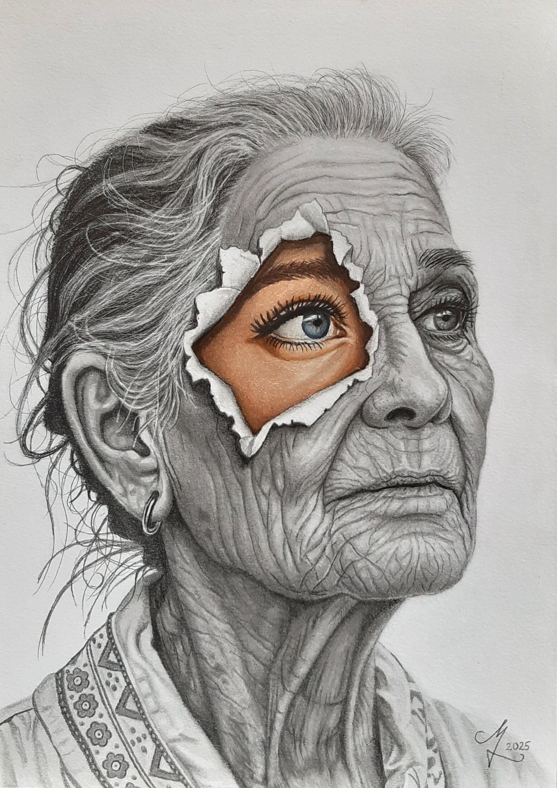
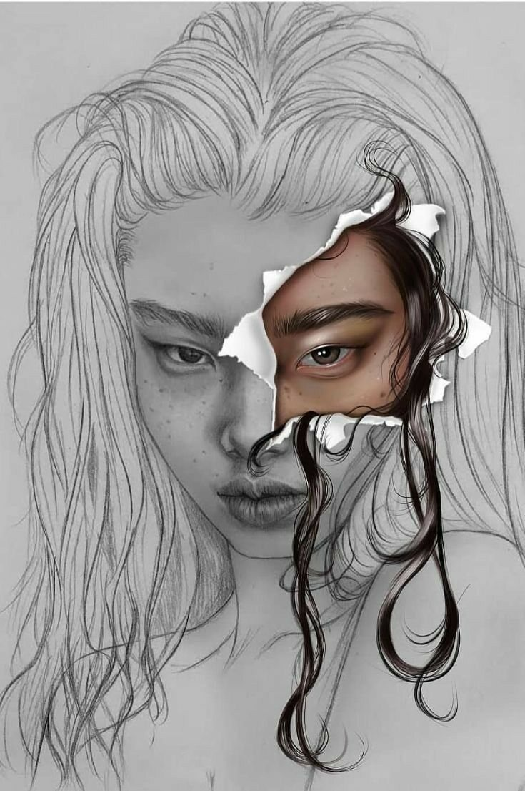
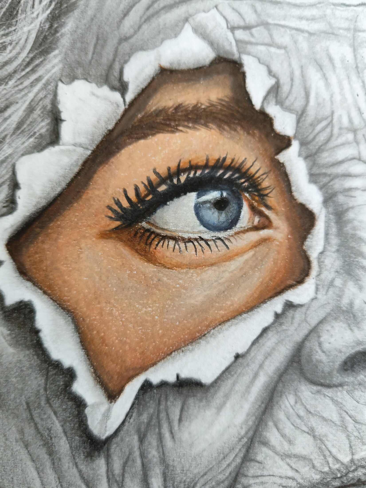
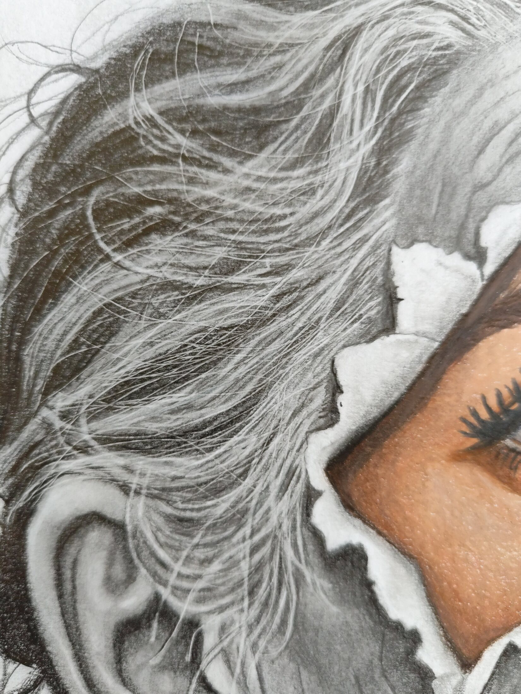
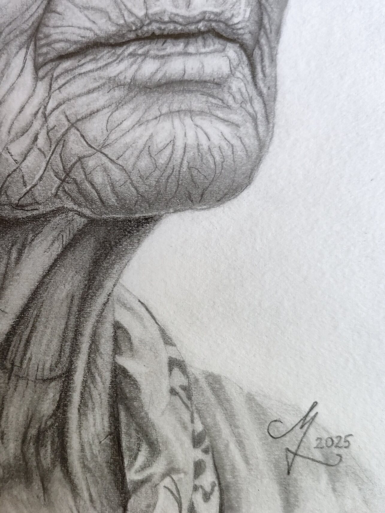
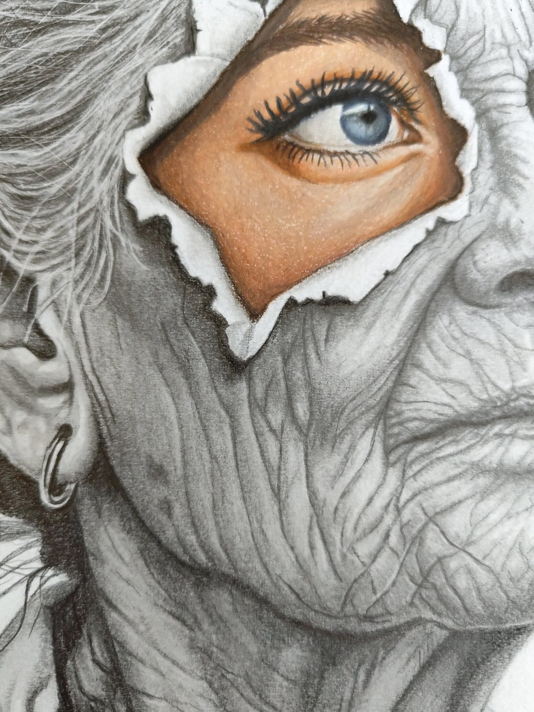

Young at Heart
“Age changes the body, not the spirit.”
Story
A monochrome elderly face is interrupted by a vivid, youthful eye beneath a torn surface. The contrast turns a familiar portrait into a meditation on the distance between physical age and inner identity. The work received second prize at a national art competition organized by Zsilip Art Association.
The inspiration image supplied the initial visual mechanism. The final drawing changed the age, identity, emotional tone and symbolic purpose of the concept.
Történet
Egy monokróm idős arcot szakít meg a feltépett felszín alatt megjelenő élénk, fiatal szem. A kontraszt a testi kor és a belső identitás közötti távolságról szól. A mű a Zsilip Művészeti Egyesület országos pályázatán második helyezést ért el.
Inspiration / Final

Details




Materials
2025 · Graphite and colored pencil on paper · 30 × 42 cm · 2nd Prize